Knife Tool¶
参考
K or Shift-KThe knife tool can be used to interactively cut up geometry by drawing lines or closed loops to create holes.
用法¶
When you press K (or Shift-K), the Knife tool becomes active.
- Drawing the cut line
- When using Knife, the cursor changes to an icon of a scalpel
and the header changes to display options for the tool.
You can draw connected straight lines by clicking
LMB.
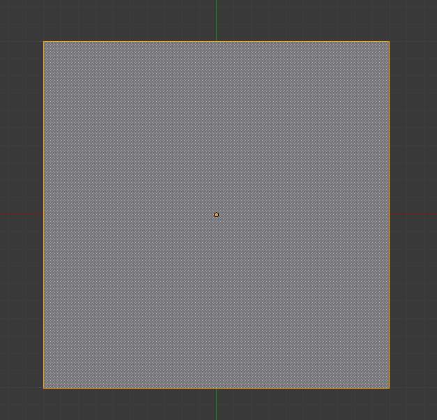
Mesh before knife cut. |
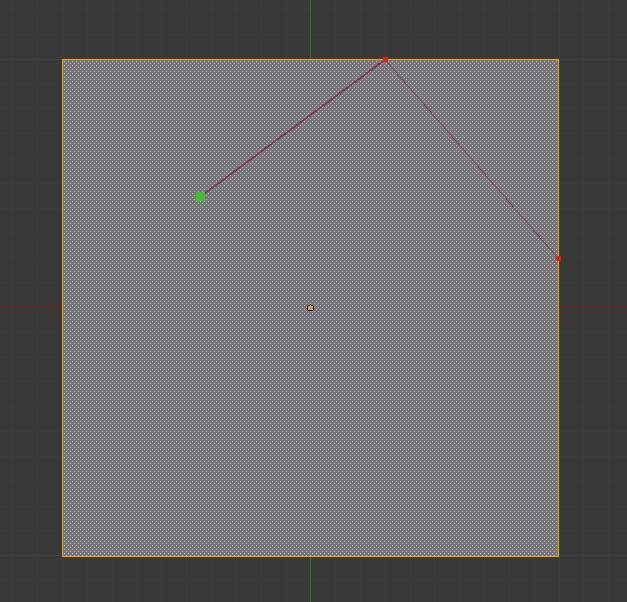
Knife cut active. |
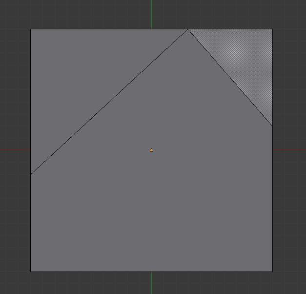
After confirming knife cut. |
{kind=link}
{kind=link}
{kind=link}
Options¶
- Knife selection
Shift-K - Activates the knife so only selected faces are cut.
- New cut
E - Begins a new cut. This allows you to define multiple distinct cut lines. If multiple cuts have been defined, they are recognized as new snapping points.
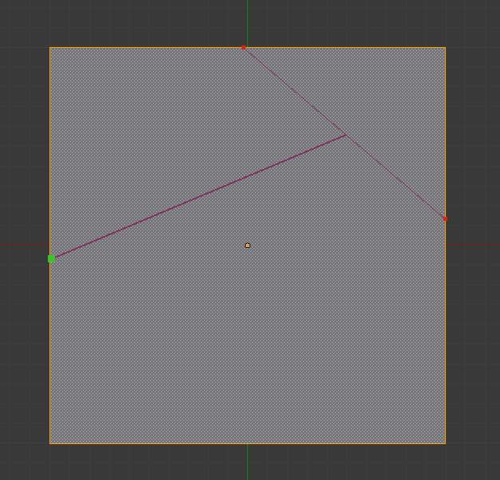
Creating multiple cuts. |
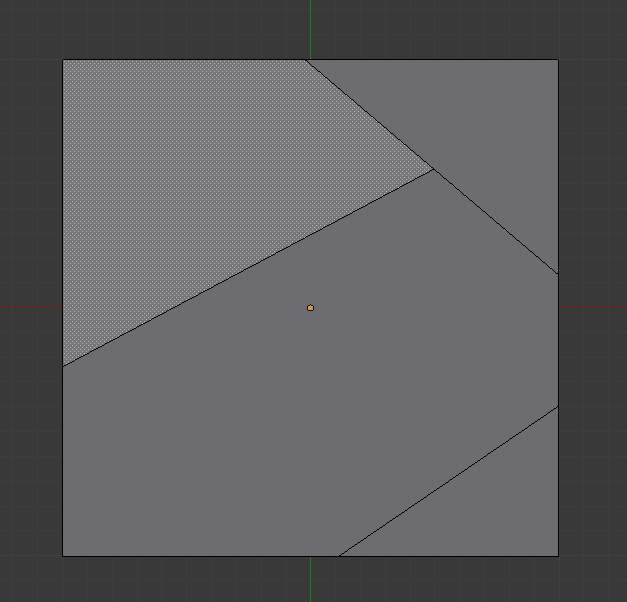
Result of starting new cuts while in the tool. |
{kind=link}
{kind=link}
- Midpoint snap
Ctrl - Hold to snap the cursor to the midpoint of edges
- Ignore snap
Shift - Hold to make the tool ignore snapping.
- Cut through:
Z - Allow the cut tool to cut through to obscured faces, instead of only the visible ones.
- Angle constrain
C - Constrains the cut to 45 degree increments.
- Close loop: Double click
LMB - This is a quick way to close the loop you’re currently cutting.
- Draw a continuous line:
LMBdrag. - So you can draw a freehand line over a surface, points will be created at edge intersections.
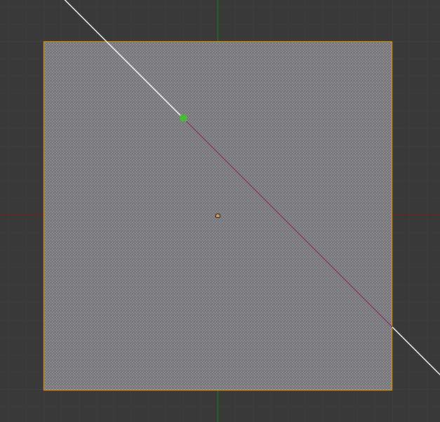
Constraining cut angle. |
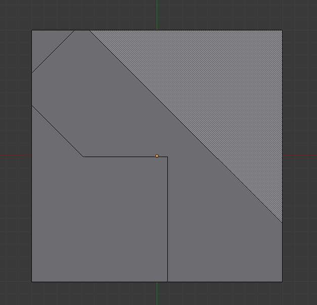
Result of constraining cut angle. |
{kind=link}
{kind=link}
Confirming and selection¶
Pressing Esc or RMB at any time cancels the tool,
and pressing LMB or Return confirms the cut, with the following options:
Return will leave selected every edge except the new edges created from the cut.
Limitations¶
Cuts that begin or end in the middle of a face, will be ignored. This is a limitation of the current geometry that can be modeled in Blender.
Knife Project¶
Knife projection is a non-interactive tool where you can use objects to cookie-cut into the mesh rather than hand drawing the line.
This works by using the outlines of other selected objects in edit-mode to cut into the mesh, resulting geometry inside the cutters outline will be selected.
Outlines can be wire or boundary edges.
To use Knife Project, in ‘object’ mode select the “cutting object” first then shift select the “object to be cut”. Now tab into edit mode and press “knife project”.
例子s¶
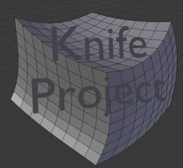
Before projecting from a text object. |
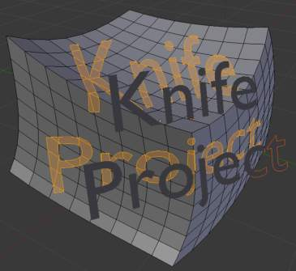
Resulting knife projection. |
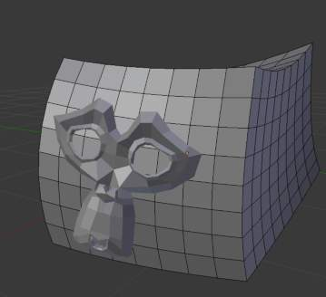
Before projecting from a mesh object. |
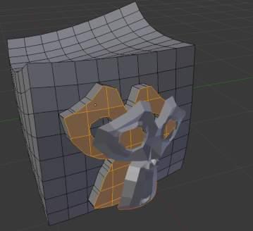
Resulting knife projection (extruded after). |
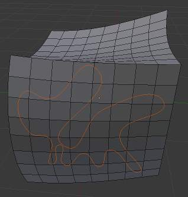
Before projecting from a 3D curve object. |
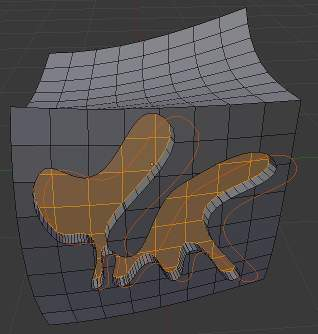
Resulting knife projection (extruded after). |
{kind=link}
{kind=link}
{kind=link}
{kind=link}
{kind=link}
{kind=link}
Known Issues¶
Cutting holes into single faces may fail, this is the same limitation as with the regular knife tool but more noticeable for text, this can be avoided by projecting onto more highly subdivided geometry.